01
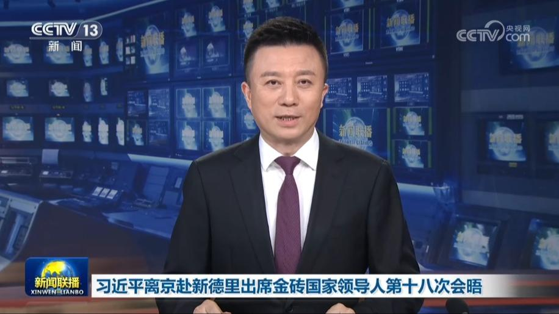
习近平离京赴新德里出席金砖国家领导人第十八次会晤
9月12日上午，国家主席习近平乘专机赴新德里，应印度总理莫迪邀请，出席金砖国家领导人第十八次会晤。


9月12日上午，国家主席习近平乘专机赴新德里，应印度总理莫迪邀请，出席金砖国家领导人第十八次会晤。
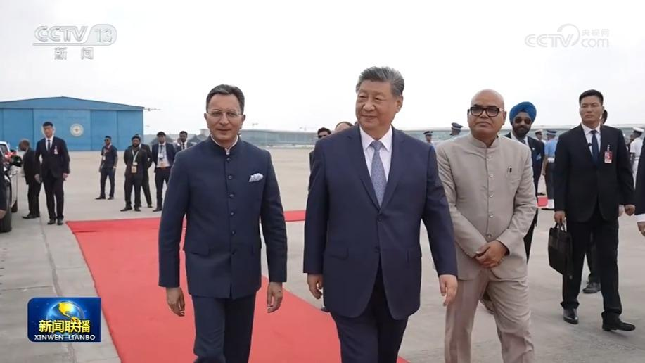
当地时间9月12日中午，国家主席习近平乘专机抵达新德里，应印度总理莫迪邀请，出席金砖国家领导人第十八次会晤。
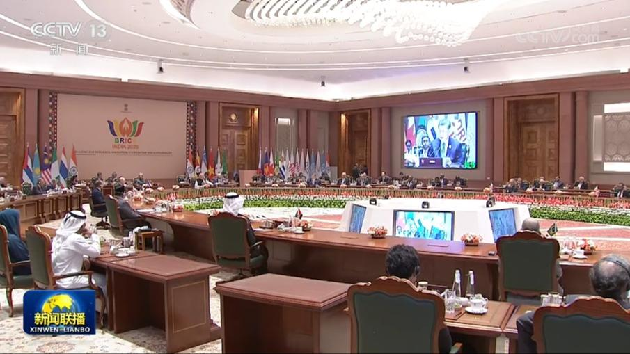
当地时间9月12日下午，国家主席习近平在新德里出席金砖国家领导人第十八次会晤第一阶段会议。
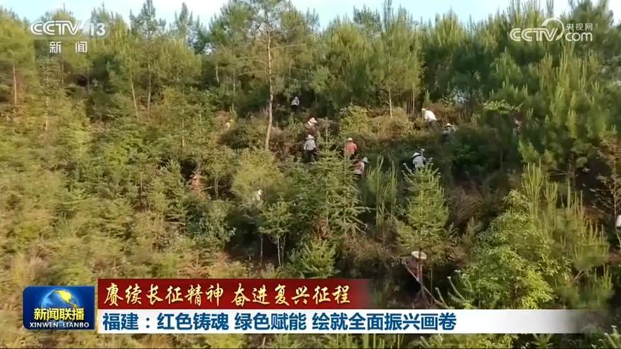
位于福建的闽西苏区是中央苏区的重要组成部分。1934年10月，中央主力红军分别从赣南、闽西向于都集结，踏上了二万五千里的征途。青山不负长征志，如今的八闽大地，正以红色铸魂，绿色赋能，奋力谱写新时代全面振兴新篇章。
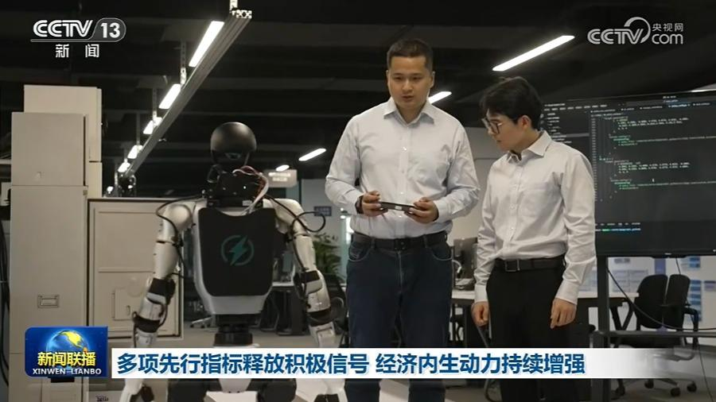
国家发展改革委国家信息中心最新数据显示，8月份多项先行指标释放积极信号，我国经济发展内生动力持续增强。
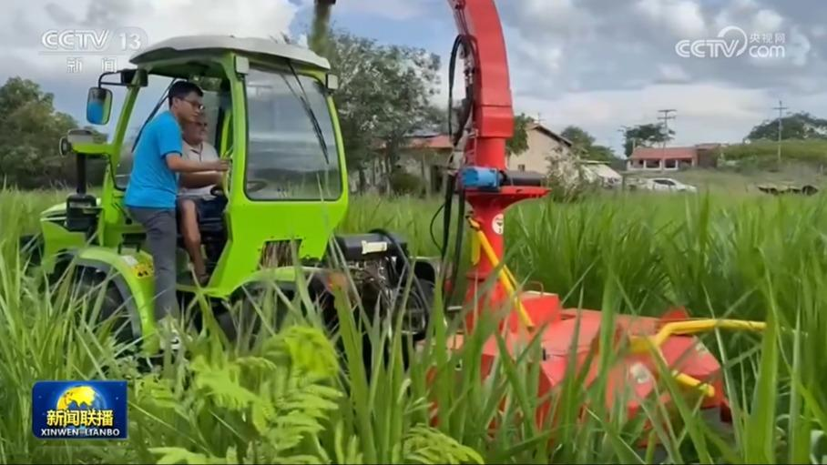
记者从商务部了解到，近年来，中国对其他金砖国家直接投资稳步增长，有效助力当地经济社会发展。截至2025年末，中国对其他金砖国家直接投资存量820亿美元。今年1—7月份，中国对其他金砖国家直接投资约40亿美元，主要投向制造、建筑、电力等领域。
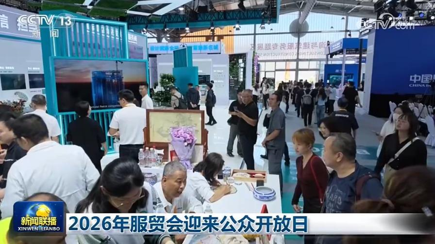
今天（9月12日），2026年服贸会迎来公众开放日。本届服贸会，有一批贴近民生的科技成果和互动体验集中亮相。新能源汽车的闪充平台，让绿色出行更便利；在体育服务展区，戴上VR头显，就能置身赛场一试身手。从展台到生活，服贸会上的新科技，正在变成市民身边的新体验。
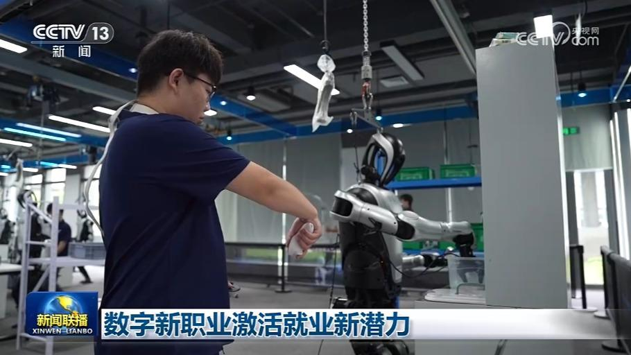
眼下，我国数字经济蓬勃发展，不断催生出新职业新岗位，在推动产业迭代升级的同时，也激发出新的就业潜力。
培育消费新业态、新模式、新场景，是各地提振消费的关键抓手。作为全国消费“三新”试点城市，长沙走出了一条特色路径，推动消费从单一“买商品”，转向沉浸式“买体验”。这场消费迭代如何落地？城市新活力如何持续释放？跟随记者走进长沙五一商圈，找寻答案。
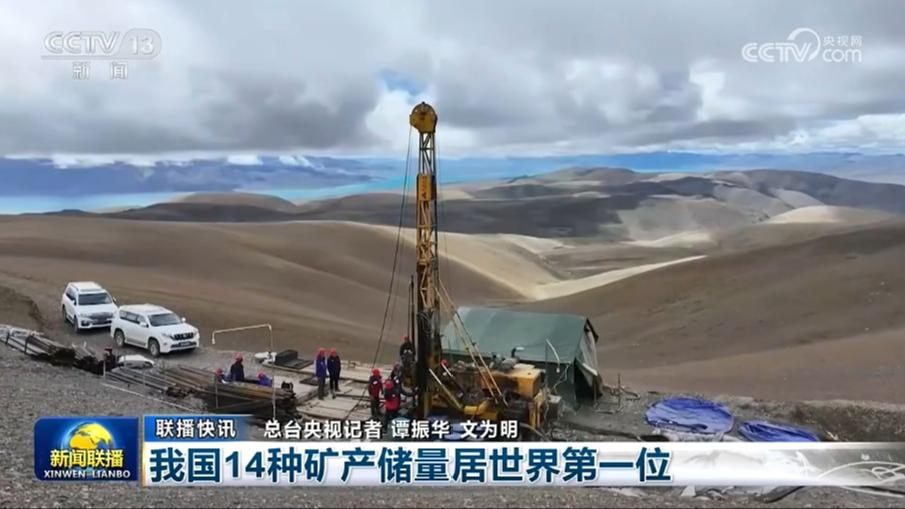
我国14种矿产储量居世界第一位
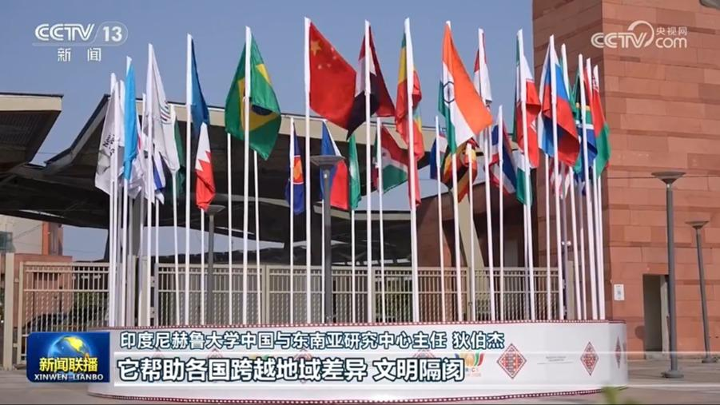
国际人士表示，金砖合作机制已成为具有全球性影响力的重要多边合作平台，中国为此发挥了关键作用，相信中国将继续引领“大金砖合作”，为维护全球南方共同利益、促进世界和平与发展贡献力量。
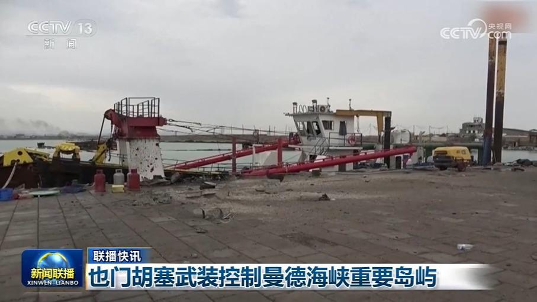
也门胡塞武装控制曼德海峡重要岛屿